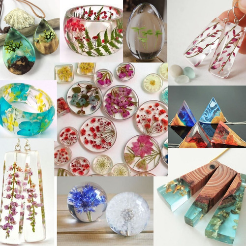

Aprende a crear a base de resina
La resina epóxica, epoxi, porcelanato o cristal líquido es un polímero termoestable que pasa de estado líquido a sólido cuando se le aplica un endurecedor o catalizador. La resina epoxi más utilizada resulta de la mezcla de Bisfenol A y epiclorohidrina. Tienen un amplio rango de aplicaciones incluyendo recubrimientos metálicos, uso en componentes electrónicos/eléctricos y LED, aislantes en instalaciones de alta tensión, en pinturas, en materiales reforzados con fibras y como adhesivos estructurales.

warning Cuidados warning
Evita exponerlas a la humedad antes y durante su preparación, es mejor mantenerlas lejos de ella.
Mantén tus obras de arte lejos de objetos afilados para evitar marcas, cortes o rasguños.
La resina no es apta para lavavajillas. No utilices productos de lavado abrasivos ni productos químicos fuertes.
Para mas información contactanos!!